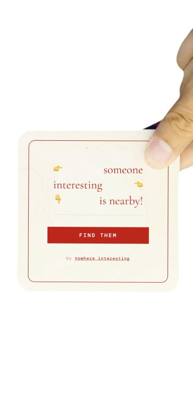
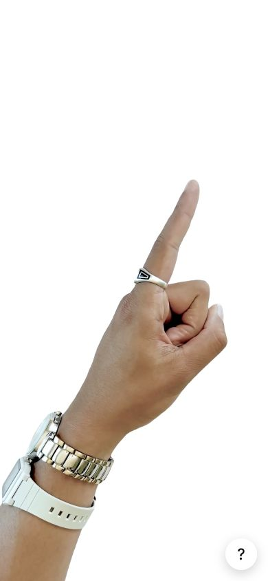
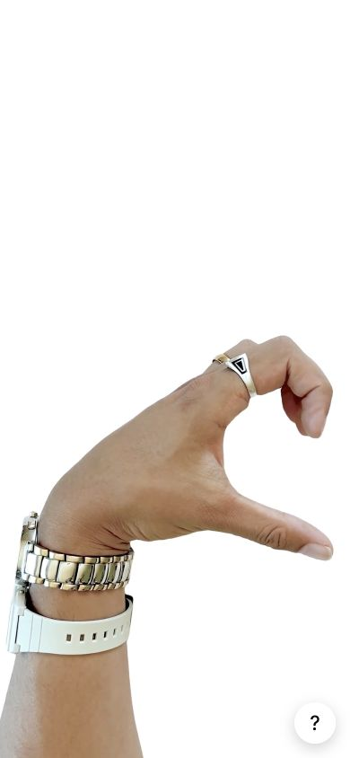
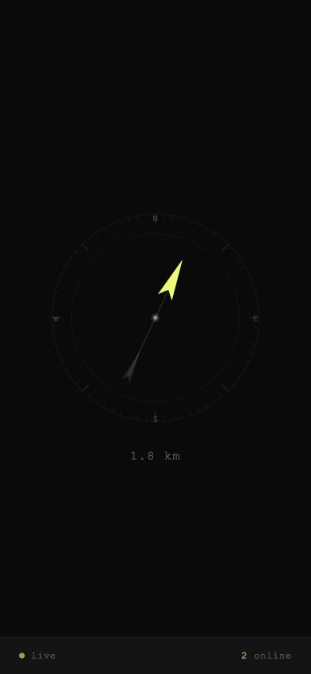

someoneinteresting.online
- Organization
- Nowhere Interesting
- Role
- Independent designer & developer
Mobile web prototype - Collaborators
- Grace Nakahara · hand model
- Duration
- 2026
Someone Interesting is a mobile website that points you toward the nearest person using it. The hand keeps pointing toward them as you turn your phone, and changes gesture as you get closer.
I designed and built the app through Nowhere Interesting. I also made the hand videos, with Grace Nakahara as the hand model.
There are no profiles or messages. You follow a direction toward someone nearby and decide whether to introduce yourself. The experiment is whether this is enough to help two people meet.
Experience
Alex opens the app before a show
Illustrative scenario
Alex is alone at a show, waiting for the doors to open. Another person nearby has the app open.
The screens follow Alex from the invitation to approaching the other person.
someone interesting is nearby

01 · Choose to join
Alex taps “find them” and allows sensor access. A hand appears and points toward another participant.

02 · Follow the hand
Alex turns the phone to follow the hand. It keeps pointing toward the nearest active participant as Alex walks.

03 · Look up
As Alex gets closer, the hand forms half of a heart. Alex looks around for the other person and decides whether to say hello.
Permission prompts and meeting confirmation are not shown.
Design decisions
From a compass to a hand
The earlier compass looked like a navigation tool. I chose a hand to suggest a person at the other end. It could point toward them, then change gesture as they got closer.
I hid the distance readout in the normal view. The size of the gap between the fingers shows roughly how close the other person is.

Both interfaces rendered from their original source at 390 × 844, with staged direction, distance, and participant count.
Connecting the hand videos
A compass arrow only needs to rotate. The hand also has to switch videos as someone approaches. I made twelve clips for each hand, including the transitions between gestures.
While pointing, the hand rotates with the direction reading. To show the gap between its fingers, it turns upright and moves fully into view. If the distance changes during a transition, the app finishes the current clip before playing the next one.
Recorded at 390 × 844 from the original motion code. Playback timing is preserved.
Building the interaction
Handling unreliable readings
The hand depends on location and compass readings. I had to decide what it should do when those readings drift or a heading is unavailable.
- Location drift
- I smooth location readings and check distance periodically to choose a gesture. This keeps small GPS changes from repeatedly switching the video, at the cost of a slower response.
- No compass heading
- If no compass heading arrives, I show N/E/S/W labels with north at the top. They disappear when a heading becomes available. This fallback gives someone a direction, but cannot adjust for which way they are facing.
- Someone leaves
- The app removes disconnected participants and old location updates. It may then point toward someone else. Each person follows their own nearest participant, so two people are not necessarily pointing toward each other.
Outcome
What works so far
The prototype selects a nearby participant and uses their location to control the hand’s direction and gestures. It also attempts audio confirmation before showing a paired heart and updating the meeting tally.
The captures show the interface with staged inputs. They do not show whether people can find each other or whether the audio confirmation works reliably between phones.
Before testing with people
I would explain each permission when it is needed and ask for microphone access at arrival. The app also needs a clear waiting screen when no one else is using it, separate from the simulated demo.
I would then try the approach on real phones and observe where people hesitate or lose direction. Active coordinates reach connected clients; that needs to be clear to anyone joining.